Small CRM — user manual
Small CRM keeps track of the people you do business with, what you have agreed, what you still owe them and when you are meeting them. This manual walks through every screen. It takes about ten minutes to read.
Everything is stored on your own computer, in a single file. There is no account to create anywhere and nothing is sent to anyone.
1. Starting for the first time
Open http://localhost:8080 in your browser. You are asked to sign in. The
very first time, the user name is admin and the password is the one set in
the configuration — changeit unless somebody changed it for you.
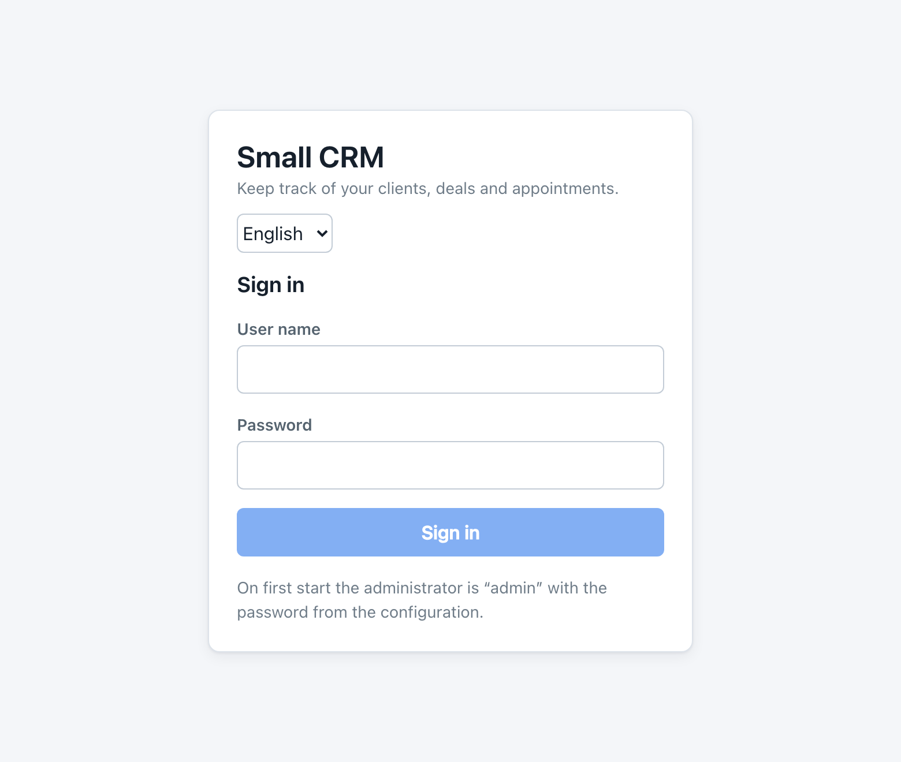
Small CRM immediately asks you to choose your own password. This cannot be skipped, and that is deliberate: the starting password is written in a configuration file that other people may be able to read.
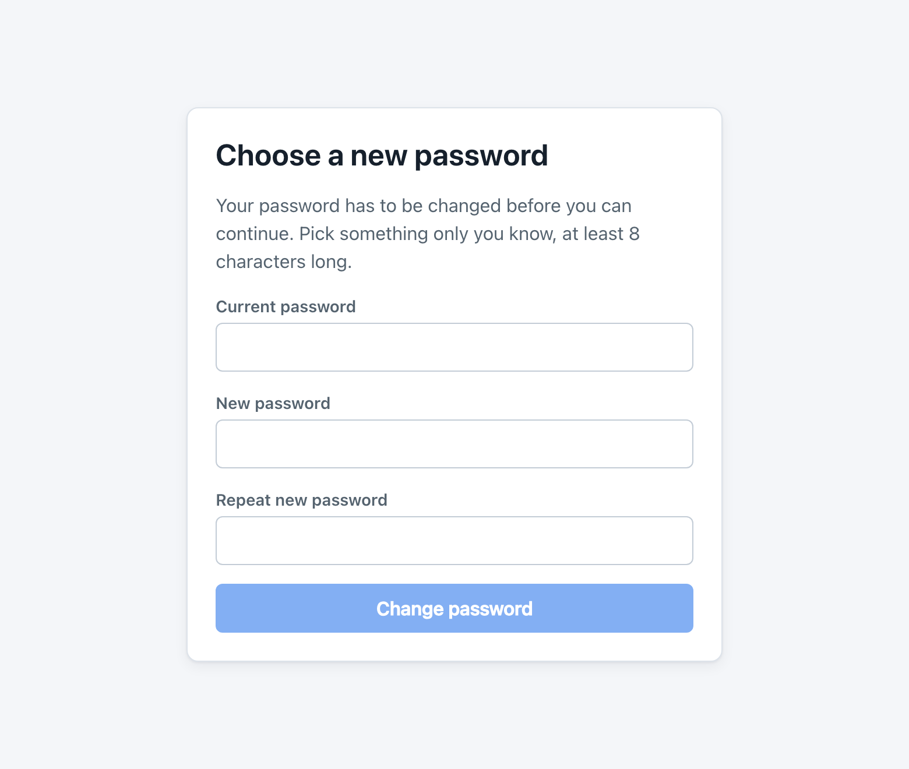
Another administrator can set a new one for you on the Users screen. If you are the only administrator, ask whoever installed Small CRM for help.
2. Finding your way around
Every screen has the same frame:
- The bar along the top shows the name of the application, the language, who is signed in, and the Sign out button.
- The list down the left is the main menu. Users and Backups only appear if you are an administrator.
- Everything else is the screen you are on.
Three habits carry across the whole application. A blue button is the one that saves. Anything that deletes is outlined in red and always asks first. And nothing is saved until you press Save — closing a dialog with Cancel throws the edit away.
3. The overview
The overview is the first thing you see after signing in. It is meant to answer one question: what needs me today?
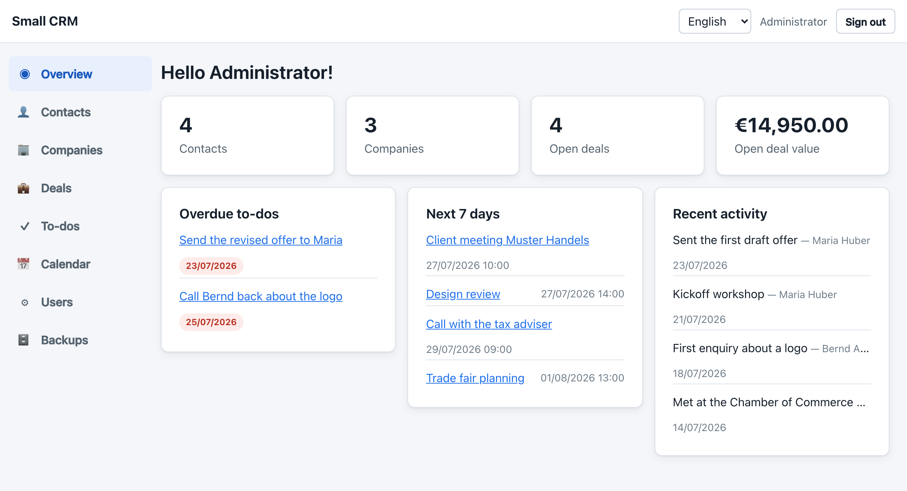
| Part | What it shows |
|---|---|
| The four tiles | How many contacts and companies you have, how many deals are still open, and what they are worth in total. Each tile is a link to the matching screen. |
| Overdue to-dos | Anything whose due date has passed and is not ticked off. The red date is how long it has been waiting. |
| Due today | To-dos due today, so they do not become overdue. |
| Next 7 days | Your appointments for the coming week. |
| Recent activity | The last things you logged: calls, e-mails, meetings and notes. |
When there is nothing overdue and nothing due today, those two panels disappear and a green line says so instead. An empty overview is good news.
4. Contacts
A contact is a person. Contacts are the centre of Small CRM: deals, to-dos, appointments and logged activity all hang off them.
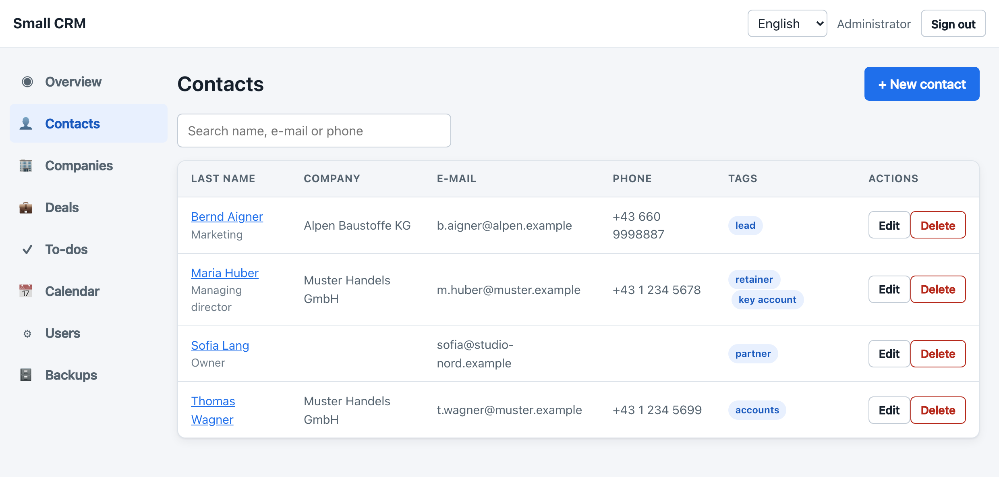
Adding someone
- Press + New contact.
- First and last name are required; everything else is optional.
- Pick a company if the person works for one. If the company is not in the list yet, add it on the Companies screen first.
- Press Save.
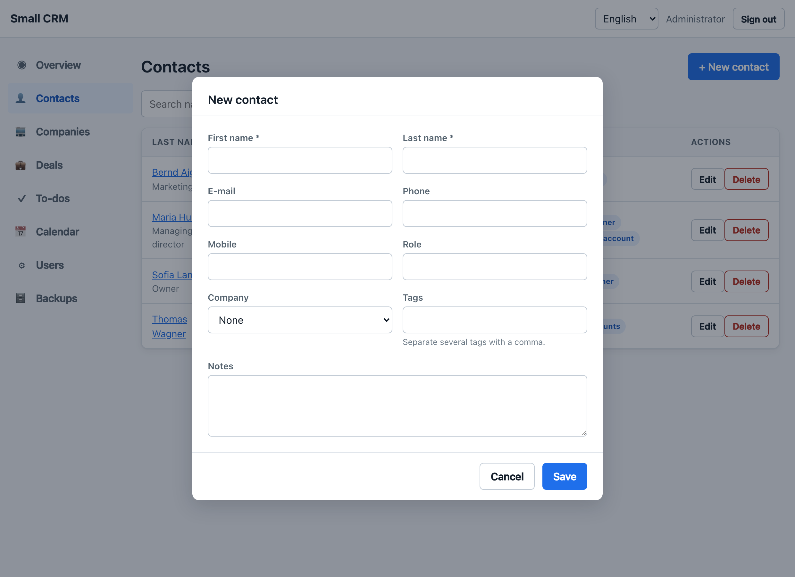
Tags are your own labels — key account, lead, pays late, whatever is useful to you. Type several separated by commas. They show up in the list so you can spot a group at a glance.
Searching
The search box above the list looks through names, e-mail addresses and phone numbers. Type a few letters and the list narrows as you go; clear the box to see everyone again.
One contact in detail
Click a name to open that person's page. It gathers everything you know about them in one place.
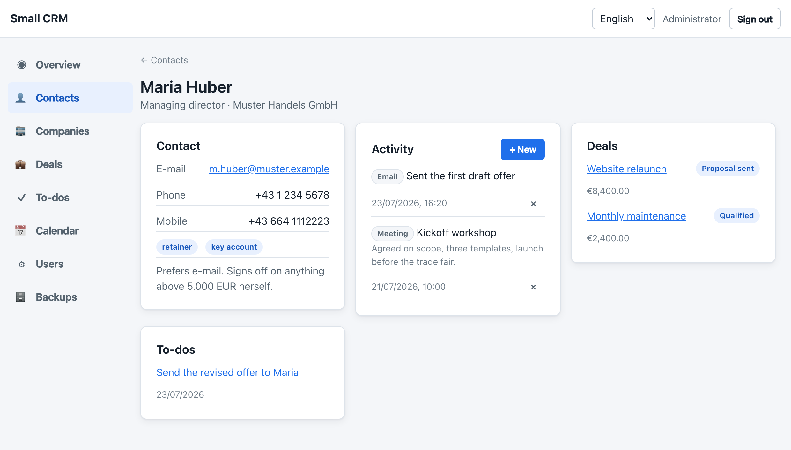
The Activity panel is the diary of your relationship. Press + New, choose whether it was a call, an e-mail, a meeting or just a note, give it a subject, and add as much detail as you like. Next time this person rings, you can see what you last agreed.
You cannot log an activity with a date in the future — that is almost always a typo. Use the calendar for things that are still to come.
Deleting a contact
Deleting a person also deletes their activity history, because an activity without a person means nothing. Their deals, to-dos and appointments are kept and simply lose the link. You are asked to confirm, and the prompt names the person.
5. Companies
A company is an organisation. Use it when you deal with several people at the same firm, or when you need the billing address and VAT number in one place.
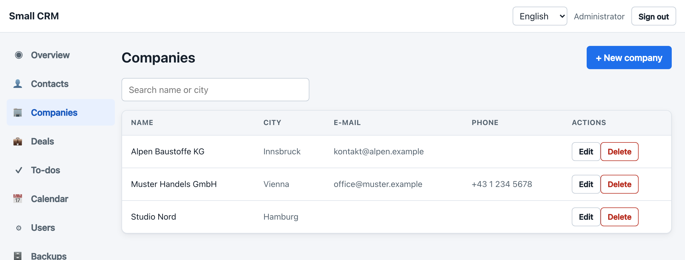
You do not have to use companies at all. A contact without one works perfectly well, which suits one-person clients.
Contacts and deals that belonged to it stay exactly where they are and simply lose the link to the company. Nothing disappears behind your back.
6. Deals
A deal is a piece of work you hope to be paid for. The screen shows one column per stage, so you can see at a glance what is where.
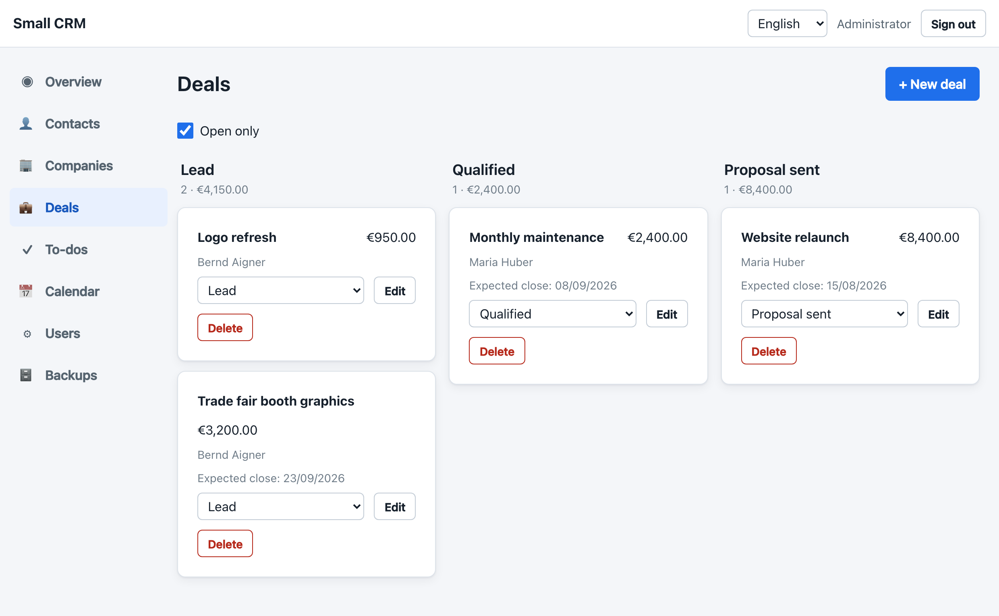
| Stage | Means |
|---|---|
| Lead | Somebody showed interest. Nothing has been promised. |
| Qualified | You have talked, it is real, and they can afford it. |
| Proposal sent | Your offer is with them and you are waiting. |
| Won | They said yes. |
| Lost | They said no, or it went quiet for good. |
To move a deal along, use the dropdown on its card and pick the new stage. There is no dragging: a dropdown says exactly where the card is going and works on a touch screen.
Open only is ticked by default, which hides won and lost deals so the pipeline shows only what still needs work. Untick it to see everything, including your history.
7. To-dos
To-dos are the small promises that are easy to forget: send the offer, chase the invoice, call back on Thursday.
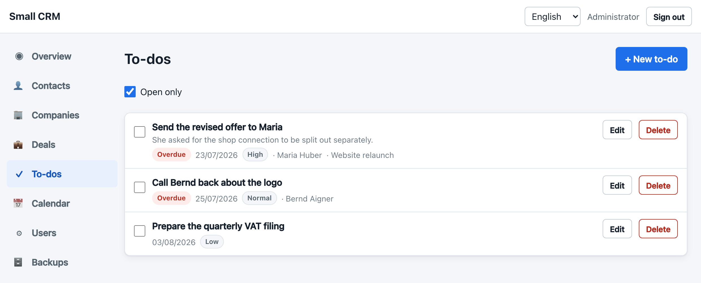
- Tick the box on the left to mark something done. It disappears from the list straight away, because Open only is on.
- Untick Open only to see what you have finished, and to tick something back open if you were too quick.
- Link a to-do to a contact or a deal, and it also shows up on that contact's page.
- To-dos without a due date sit at the bottom. They are for "some day", not for today.
8. Calendar
The calendar is a simple agenda: your appointments grouped by day, earliest first. Use the buttons at the top to look 7, 30 or 90 days ahead.
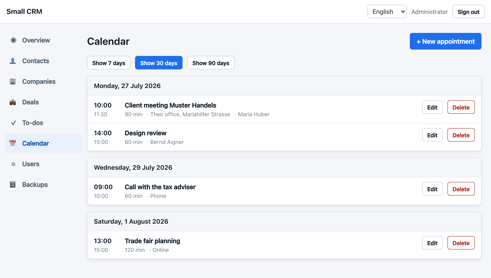
The double-booking check
While you are filling in a new appointment, Small CRM checks the time against your calendar and tells you before you save. A green line means the slot is free. A yellow box means it clashes, and it names what with.
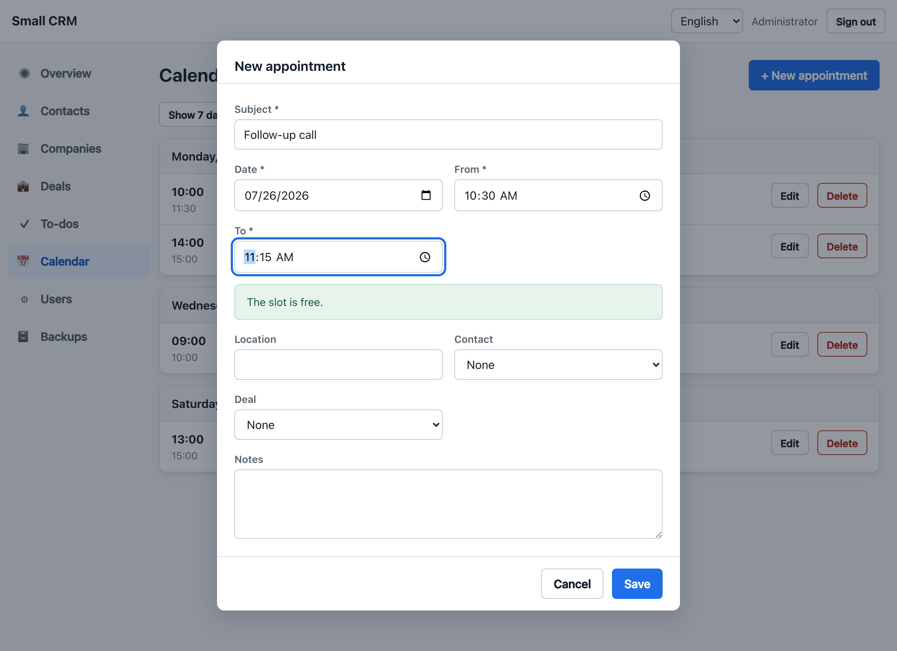
If you try to save anyway, Small CRM refuses and explains why. You then have two choices: change the time, or press Save anyway to book both in parallel. That button only appears after a refusal, so a double booking is always something you chose rather than something you missed.
An appointment ending at 10:00 and another starting at 10:00 do not clash. Only real overlaps are flagged.
The check looks at your calendar only. If a colleague has something at the same time, that is their business, and you are not warned about it.
9. Switching language
Small CRM speaks English and German. The dropdown in the top bar switches between them immediately — no reload, and you do not lose what you were doing.
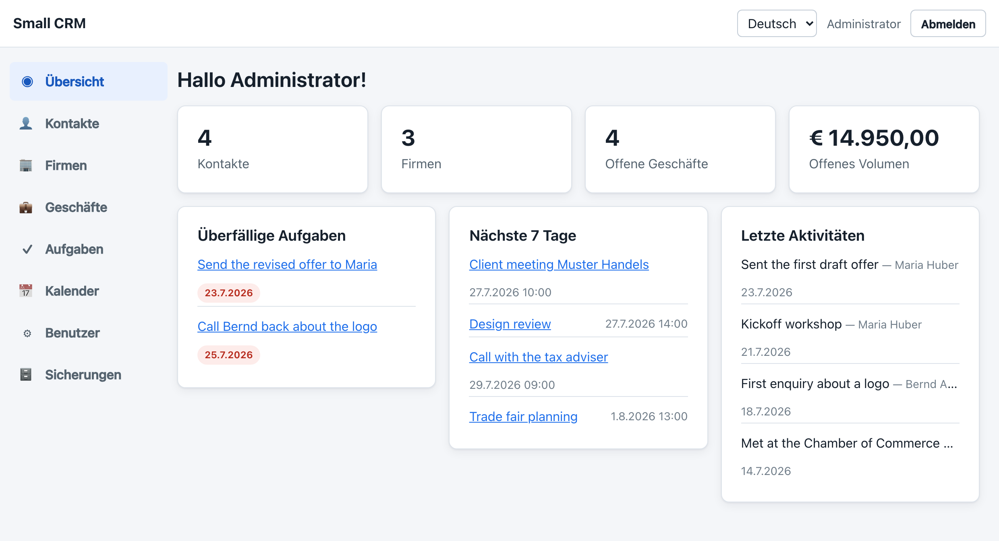
Your choice is remembered on that computer and applies to error messages as well, not just the labels. Dates change format (25/07/2026 against 25.7.2026) and so do amounts (€1,234.50 against € 1.234,50).
When you click a date or time field, the picker your browser shows follows your computer's language, not the one chosen here. That is how browsers work and cannot be changed from inside Small CRM.
10. Users
Administrators can give other people access — an assistant, a partner, your bookkeeper. Everyone shares the same data: there are no private contacts.
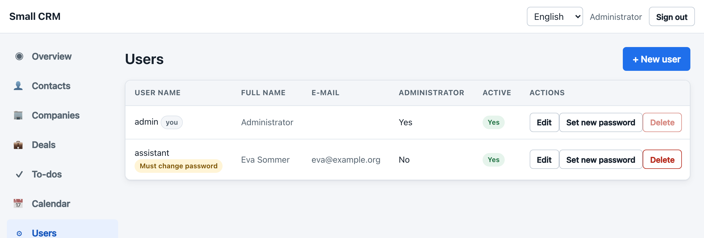
- Press + New user.
- Give a user name and a starting password, and tell the person both.
- Tick Administrator only if they should also manage users and backups.
The new person has to replace that starting password the first time they sign in, so it never becomes their real one. Set new password does the same thing again if somebody is locked out.
Somebody who has left should be set to inactive rather than deleted: they can no longer use Small CRM, but the records they created keep their name.
Small CRM refuses to delete or deactivate your own account, and refuses to remove the last remaining administrator. There is always a way back in.
11. Backups
Small CRM backs itself up. Every time you change something, the whole of your data is
written to an XML file in a backup folder next to the application. Changes
made close together end up in one file, so a busy afternoon does not leave hundreds of
copies behind.
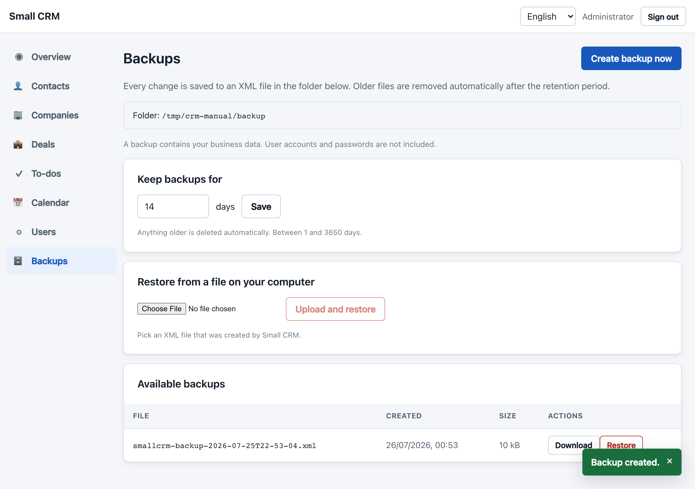
| What | Does |
|---|---|
| Create backup now | Writes a file immediately. Useful before you try something risky. |
| Keep backups for … days | How long files are kept. Fourteen days to start with. Anything older is removed automatically. |
| Download | Saves that file wherever you like — a USB stick, another computer, your cloud drive. |
| Restore | Puts the data from that file back, replacing what is there now. |
| Upload and restore | The same, from a file you saved elsewhere. |
Restoring
All contacts, companies, deals, activities, to-dos and appointments are deleted and replaced by what is in the file. Anything entered after that backup was taken is gone. User accounts are not affected.
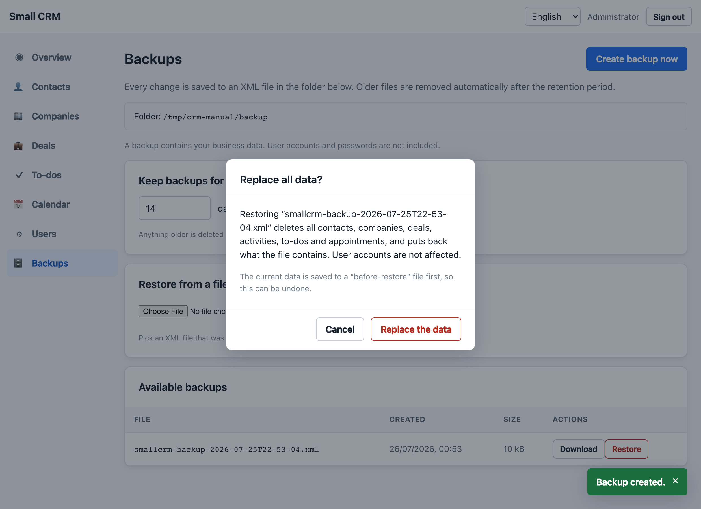
Before replacing anything, Small CRM saves the current state to a file starting with
before-restore-. So if you restore the wrong file, you can restore that one
and be back where you started. It appears at the top of the list with a yellow badge.
User accounts and passwords are deliberately left out, so a backup file can be handed to your accountant without giving away anyone's login. After restoring onto a brand new installation you will have your data but no users, and the records will not show who created them.
The backup folder sits next to your database on the same computer. That protects you from a mistaken deletion, but not from a lost, stolen or broken machine. Download a backup now and then and keep it elsewhere.
12. Common questions
Where is my data?
In a single file called smallcrm.mv.db, in the data folder next
to the application, plus the XML files in backup. Copy those two folders and
you have copied everything.
Can I use it on my phone?
The screens rearrange for a small display and the menu collapses behind the ☰ button. It is usable for looking things up. Longer editing is more comfortable on a computer.
I deleted something by mistake.
There is no undo button, but there is almost certainly a backup from a few minutes earlier. Go to Backups, find the file from before the mistake and restore it — bearing in mind that everything entered since then goes too. If in doubt, download the newest backup first so you have both versions.
Two of us want to work at the same time.
That works. Everyone sees the same contacts, deals and to-dos. The one thing to know is that if two people edit the same record at the same moment, the one who saves last wins, silently.
Does anything leave my computer?
No. Small CRM does not send data anywhere, has no cloud component and needs no internet connection to run.
Can I sync with Google Calendar?
Not yet. Appointments are stored with the fields such a synchronisation will need, so appointments you enter today will be picked up when it arrives.